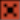

Patterns, Phrases and Triggers
In PR8, a Pattern contains 6 Tracks arranged vertically. Each Track is assigned a sound (Drum Patch number) and a Phrase number. A Phrase is 16 steps long (horizontally, left-to-right) and contains the Triggers to tell PR8 when and how to play the Drum Patches assigned to each Track. Each Pattern also has a Speed and Swing setting.
Probably the most important thing to understand about the relationship between Patterns, Phrases and Drum Patches is that you have complete flexibility to assign any Phrase to any Track of any Pattern (even the same Phrase on multiple Tracks of a single Pattern). You can also assign any Drum Patch to any Track of any Pattern - Phrases are not tied to a Drum Patch and neither are they tied to Tracks.
NOTE THOUGH : if you have assigned a Phrase to more than one Pattern, wherever you edit that Phrase, the changes will appear in all Patterns where the Phrase is used.
Editing Patterns
Let's look at the Pattern Editor in more detail.
PR8 Pattern Editor
When editing a Pattern you'll move around between 4 different areas: Pattern Parameters, Track Assignment, Grid Editor and Trigger Editor
(i)Pattern Parameters
Starting at the top of the Pattern Editor are the Pattern Parameters PTN, SPD, SWG and LEN.
Pattern: Pattern Parameters
PTN is the Pattern number that is currently loaded into the Pattern Editor. If PR8 is in "Pattern Mode" then this is the Pattern that will play in an infinite loop (until you stop PR8 or change the PTN number).
SPD is the playback speed for the current Pattern and SWG is the 'swing' percentage applied to the Speed (you can specify 00, 25, 50 or 75 percent). Note that SPD and SWG is set per Pattern.
The final parameter, LEN is the number of steps that will play of the Pattern. By default this value is set to 10 (16 steps, 10 hex = 16 decimal) which means the Pattern will play in it's entirety but you can set smaller values (down to 01) to 'truncate' the playback of the Pattern.
(ii)Track Assignment
On the left-hand side is the Track Assignment section:

Pattern: Track Assignment
This is where you assign a Drum Patch (DRM) and Phrase (PHR) to each of the six Tracks of the Pattern. This is also where your cursor needs to be if you wish to use the Clone Phrase function (read about that on the Controls page).
The small green lights to the left are the Track Status indicators.
- If a Track is active it's status indicator will be solid green.
- If a Track is muted the indicator will be black.
- If a Track has been soloed, that Track's status indicator will be solid red and the other Track's indicators will blink green (unless the Track was previously muted in which case it will remain black).
The Track Status indicators also are used to show activity on the Track when PR8 is playing. You'll see that the indicators will flash white when notes are played.
The other thing to note is that Track Status is global within PR8 and therefore is not a setting for each Pattern.
You can read about how to mute and solo Tracks on the Controls page.
(iii)Grid Editor
The Grid Editor is where you enter and edit note triggers.
Pattern: Grid Editor
The Grid is divided into 6 rows by 16 columns. Each row is one Track of the Pattern and displays the contents of the Phrase that is assigned to that Track. Each column represents one Step of the Pattern Track. Patterns always contain 16 steps and always play from left-to-right.
To the left of the Grid are a column of blue indicator arrows. This is to show you which Track is the current Track. Some operations can be performed on Tracks (in reality it's on the Phrase assigned to a Track) even when the editing focus is away from the Grid so it's important to know this at all times.
At the top of the Grid are the playback step indicators. This shows you which step of the Pattern is being played. The larger indicators on the 1st, 5th, 9th and 13th steps have no special meaning, they're just a visual aid. Same as the alternating dark/light grey of the blank Grid cells on the same Step numbers.
If there is a red square in a cell that means it contains a Note Trigger. Empty cells in the Grid mean that there is no data on that step of the Phrase. There are three types of Note Triggers.
| Symbol | Function |
|---|---|
| Normal Note | |
| Tie Note | |
|  | Kill Note |
Normal Notes are just that - normal notes that behave as you'd expect. Tie Notes are similar to Normal Notes but with a Tie Note many of the synthesis parameters, such as Amplitude Envelopes, are not initialised at the start of the Tie Note. Kill Notes, as you might expect, will kill any previously playing note on that Track.
To learn how to add, edit and remove Note Triggers from the Grid see the Controls page.
You may be wondering why notes are referred to as Note Triggers. This is because a cell that contains a Note Trigger just tells PR8 to play something in that cell. A Note Trigger is actually made up of 5 different parameters and only one of these parameters is the actual note number (pitch).
(iv)Trigger Editor
To the right of the Grid Editor is the Trigger Editor
Pattern: Trigger Editor
The Trigger Editor is where you can edit the 5 parameters that make up a Note Trigger. From top-to-bottom: Note Number, Retrigger Speed, T1, T2 and T3
Note Number is pretty self-explanatory. The actual pitch played by each Drum Patch is based on this value (unless you specify absolute offsets in the OSC-C setting of the Drum Patch Voices). For example if you specify a Coarse Offset of 0C (twelve) in the Drum Patch, the actual pitch played will be one octave above whatever Note Number you set in the Note Trigger.
Retrigger Speed is used to cause PR8 to keep retriggering the current Note until the next non-empty cell. Valid range for Retriggering is 00-7F. Values outside of that range are used for Pitch Slide.
Pitch Slide: the RT parameter can also be used to perform a pitch slide. Please see the Pitch Slide section at the bottom of this page.
T1/T2/T3 are used to send values to the Drum parameters that are assigned to T1/T2/T3 in the Drum Patch. For example, if you have the T1 Parameter in your Drum Patch set to Amplitude Envelope A (AAE), whatever value you set in the T1 Parameter of the Note Trigger will get sent to the Amplitude Envelope A parameter when that Note Trigger plays.
So that you have a visual reminder of which note in the Grid you are editing, when you're in the Trigger Editor a 'ghost cursor' is placed on the cell of the Grid.
Trigger Parameter Indicator
You may have noticed (and wondered about) the little blue indicator to the left of the Trigger Parameters. It tells you which one of the Trigger Parameters can be edited from the Grid. Let me explain: when in the Trigger Editor you can move between the Trigger Parameters and edit them as you like. But, when in the Grid Editor, you can only modify one of the five values (the same one for every note) due to UI limitations. Therefore, the blue indicator tells you which of the five parameters will be modified as you edit Note Triggers in the Grid. It's easier if you just try it.
Conversely, when in the Trigger Editor, it's possible to move the 'ghost cursor' in the Grid so that you can modify Trigger Parameters for several notes without leaving the Trigger Editor.
Which way you edit the Trigger Parameters will depend on your preferences and the context of what you're trying to achieve.
You can read about how to do all of this editing/navigation on the Controls page.
Pitch Slide
Setting Retrigger (RT) values for a note in the range 81-FF give you access to the Secret Pitch Slide function!.
This is very much work-in-progress as I've had trouble coming up with a clever way to do it in PR8. The problem being that it's possible to have an instrument that uses, say, both Pulse voices and the Triangle voice. While actually modifying the pitch of all three of those voices is not a problem, because it's possible to have all three voices at differenet semi-tone intervals, detecting a point where the individual voices have reached a 'destination' note is.
So, the Pitch Slide in PR8 doesn't so much slide to a note but kind of towards it (and past it, depending on the Slide setting you specify). I'm continuing to think about how to implement it better but it is actually quite usable in it's current form, just don't expect it to be able to automatically slide smoothly to a note.
To make the Slide work, specify a Retrigger (RT) value in a Trigger (81 being the slowest speed, FF being the fastest) and if the note in the Trigger is higher or lower than the preceding note, the pitch will be slid up/down from the preceding note pitch. If you perform a Slide on a Tie Note, the starting pitch will be whatever pitch the preceding note was a the point the Tie Note interrupted it - this makes it possible to combine two (or more) Slides and Tie Notes for some nice effects.
Note: Pitch Slide only works for Voices A, B and C (Pulse 1, Pulse 2 and Triangle). Note that while Pitch Sliding, effects such as Vibrato and Arpeggio are momentarily suspended.
Miscellaneous
There are several other more advanced editing functions you can do inside the Grid Editor, for example shifting a Phrase left/right or swapping the vertical order of Tracks. You can read about these on the Controls page.